Grumbot is a fully animated robot built only with Minecraft redstone to be 100% survival-compatible.
The concept was inspired by Mumbo Jumbo’s Grumbot in Hermitcraft, but much more advanced. Instead of preset faces on a timer, this version is built around a real display system with an animation pipeline. The result is expressive, modular, and compact for how much it does.
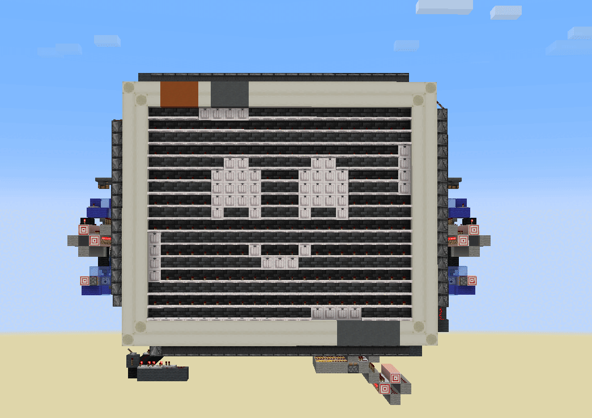
Grumbot’s face is split into three parts:
Each of these parts has around 10 unique preset shapes, which can be mixed freely. From smiles to frowns and even cross-eyed, creating 1000+ possible combinations
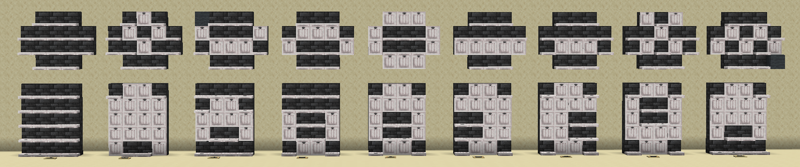
The display is made entirely using Pale Oak Trapdoors. Unpowered trapdoors create a thin bright line, while powered trapdoors fill a whole pixel.
This gives us a simple binary pixel, but with a really clean look, especially for Minecraft.
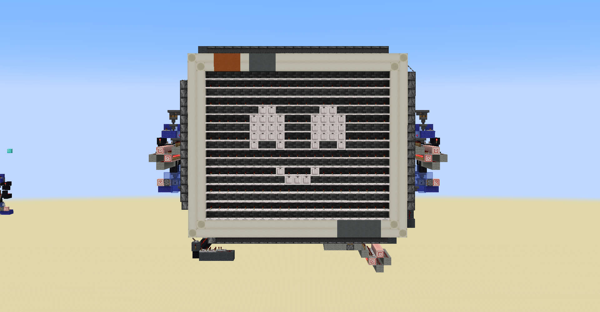
To avoid addressing each pixel manually, a Signal Strength Mapper assigns a single redstone value to a face preset shape.
One signal input → One complete eye or mouth shape
This mapping is extremely important to be able to store face presets easily and efficiently.
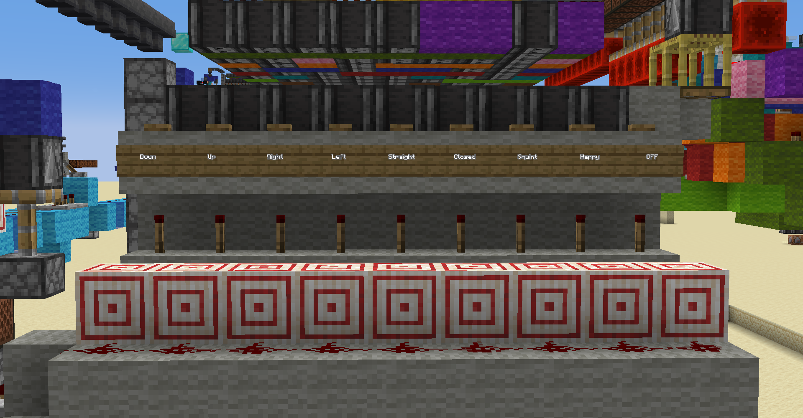
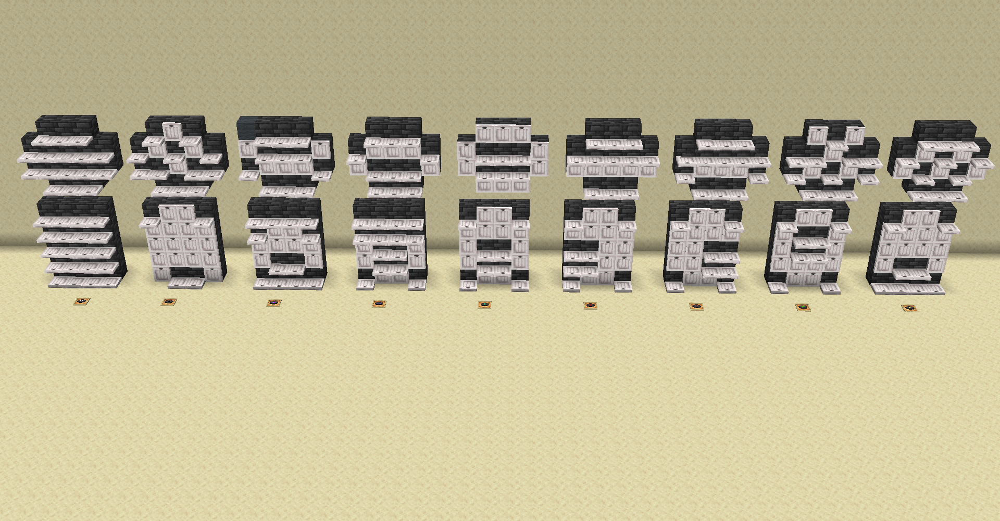
Since animations are just a sequence of frames, we need to implement a parallel stream of signals into our three face parts, which then get mapped to the correct face. To make this process very simple, modifiable and easily accessible I decided to use Shulker Boxes filled with Music Discs to store the animations.
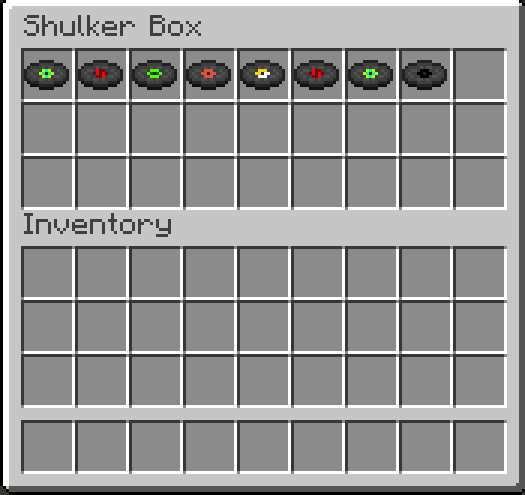
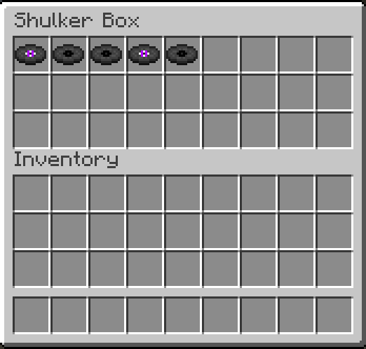
This system relies on a specific game mechanic:
Depending on the music disc type we can get a different signal strength output, so each music disc type will be translated into a signal strength, which will then be translated into a specific face preset by the Signal Strength Mapper.
For example:
Reading the music discs sequentially produces an animation.
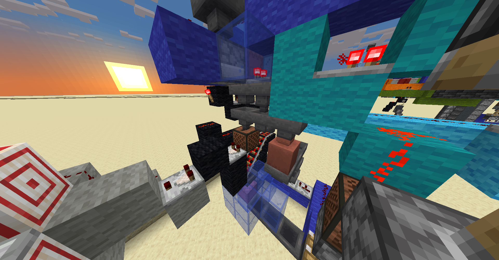
A dispenser selects a Shulker Box at random, determining which animation plays next.
This makes Grumbot feel alive, because his face changes from moment to moment, producing natural behavior.
I'm extremely proud of the finished Grumbot.
The build is compact, survival-friendly and pushes redstone mechanics to its limits.
I really liked the challenge and creative solutions I had to come up with, due to the limitations of Minecraft's Redstone system.
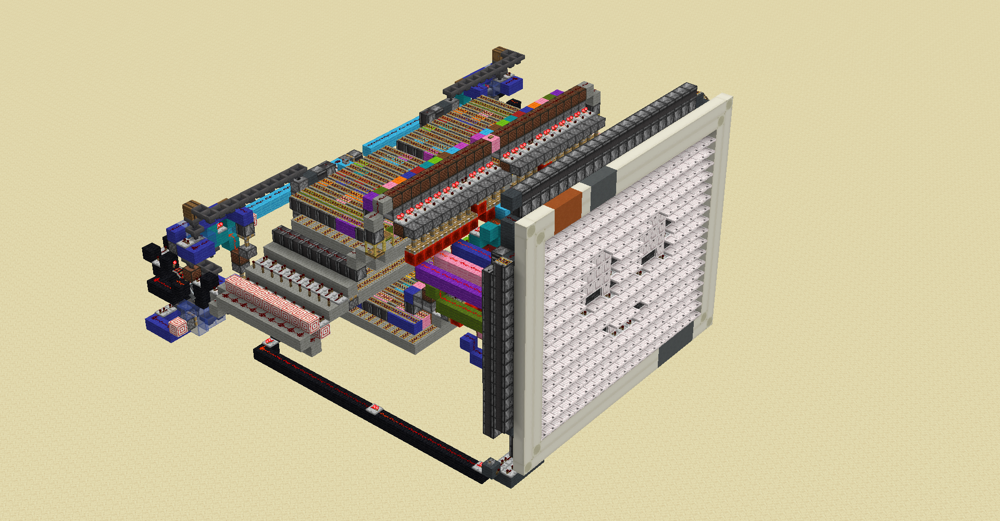
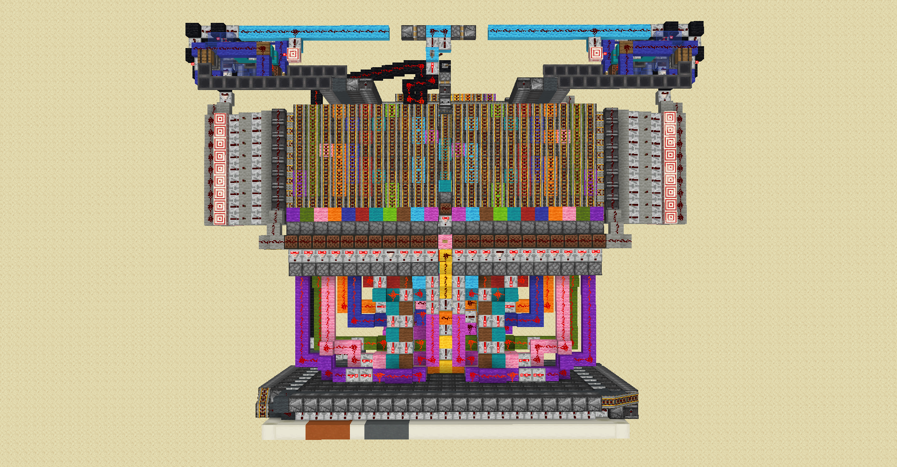
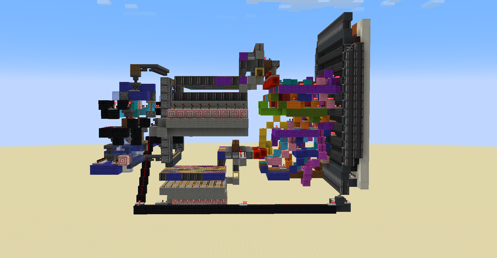
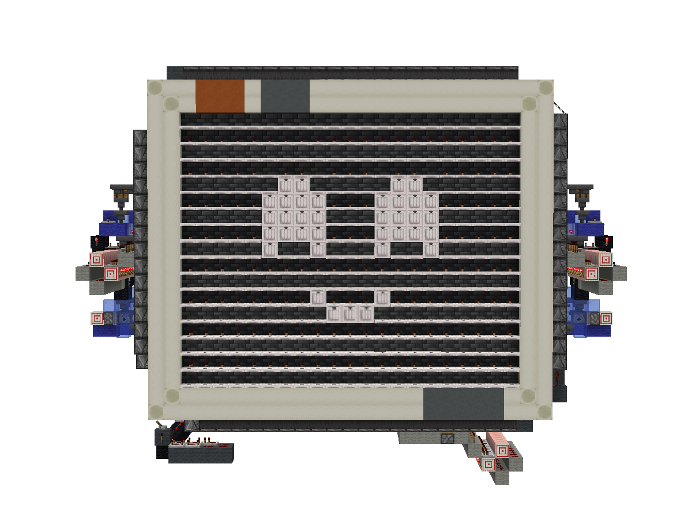
A animated robot, made to feel alive using only Minecraft's Redstone system!
Project environment
Logic and systems
Segment building and testing